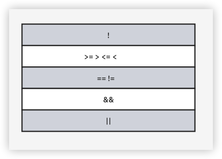
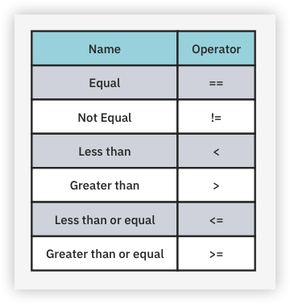

5 Control Flow¶
When writing a computer program, you need to be able to tell the computer what to do in different scenarios. For example, a calculator app performs one action if the user taps the addition button and another if they tap the subtraction button.
In computer programming terms, this concept is known as control flow, because you can control the flow of decisions the code makes at multiple points. In this chapter, you’ll learn how to make decisions in your programs.
Making Comparisons¶
You’ve already encountered a few different Dart types, such as int, double and String. Each of those types is a data structure that’s designed to hold a particular type of data. The int type is for integers while the double type is for decimal numbers. String, by comparison, is useful for storing textual information.
A new way of structuring information, though, requires a new data type. Consider the answers to the following questions:
- Is the door open?
- Do pigs fly?
- Is that the same shirt you were wearing yesterday?
- Is the traffic light red?
- Are you older than your grandmother?
- Does this make me look fat?
These are all yes-no questions. If you want to store the answers in a variable, you could use strings like 'yes' and 'no'. You could even use integers where 0 means no and 1 means yes. The problem with that, though, is what happens when you get 42 or 'celery'? It would be better to avoid any ambiguity and have a type in which the only possible values are yes and no.
Boolean Values¶
Dart has a data type just for this. It’s called bool, which is short for Boolean. A Boolean value can have one of two states. While in general, you could refer to the states as yes and no, on and off, or 1 and 0, most programming languages, Dart included, call them trueand false.
The word Boolean was named after George Boole, the man who pioneered an entire field of mathematics around the concept of true and false. Since computers themselves are based on electrical circuits which can be in a binary state of on or off, Boolean math is fundamental to computer science.
When programming in a high-level language like Dart, you don’t need to understand all of the Boolean logic that’s happening at the circuit level, but there’s still a lot about Boolean math you can apply to decision making in your own code.
To start your exploration of Booleans in Dart, create two Boolean variables like so:
const bool yes = true;
const bool no = false;
Because of Dart’s type inference, you can leave off the type annotation:
const yes = true;
const no = false;
In the code above, you use the keywords true and false to set the state of each Boolean constant.
Boolean Operators¶
Booleans are commonly used to compare values. For example, you may have two values and you want to know if they’re equal. Either they are equal, which would be true, or they aren’t equal, which would be false.
Next, you’ll see how to make that comparison in Dart.
Testing Equality¶
You can test for equality using the equality operator, which is denoted by ==, that is, two equals signs.
Write the following line:
const doesOneEqualTwo = (1 == 2);
Dart infers that doesOneEqualTwo is a bool. Clearly, 1 does not equal 2, and therefore doesOneEqualTwo will be false. Confirm that result by printing the value:
print(doesOneEqualTwo);
Sometimes you need parentheses to tell Dart what should happen first. However, the parentheses in that last example were there only for readability, that is, to show you that the two objects being compared were 1 and 2. You could have also written it like so:
const doesOneEqualTwo = 1 == 2;
Note
You may use the equality operator to compare int to double since they both belong to the num type.
Testing Inequality¶
You can also find out if two values are not equal using the != operator:
const doesOneNotEqualTwo = (1 != 2);
This time, the result of the comparison is true because 1 does not equal 2, so doesOneNotEqualTwo will be true.
Note
doesOneNotEqualTwo isn’t a great variable name. Avoid negative names for Boolean variables because if the value is false then you have a double negative and that just makes your brain hurt!
The prefix ! operator, also called the not-operator or bang operator, toggles trueto false and false to true. Another way to write the statement above is:
const alsoTrue = !(1 == 2);
Because 1 does not equal 2, (1 == 2) is false, and then ! flips it to true.
Testing Greater and Less Than¶
There are two other operators to help you compare two values and determine if a value is greater than (>) or less than (<) another value. You know these from mathematics:
const isOneGreaterThanTwo = (1 > 2);
const isOneLessThanTwo = (1 < 2);
It’s not rocket science to work out that isOneGreaterThanTwo will equal false and that isOneLessThanTwo will equal true.
The <= operator lets you test if a value is less than or equal to another value. It’s a combination of < and ==, and will therefore return true if the first value is less than, or equal to, the second value.
print(1 <= 2); // true
print(2 <= 2); // true
Similarly, the >= operator lets you test if a value is greater than or equal to another value.
print(2 >= 1); // true
print(2 >= 2); // true
Boolean Logic¶
Each of the examples above tests just one condition. When George Boole invented the Boolean, he had much more planned for it than these humble beginnings. He invented Boolean logic, which lets you combine multiple conditions to form a result.
AND Operator¶
Ray would like to go cycling in the park with Vicki this weekend. It’s a little uncertain whether they can go, though. There’s a chance that it might rain. Also, Vicky says she can’t go unless she finishes up the art project she’s working on. So Ray and Vicki will go cycling in the park if it’s sunny and Vicki finishes her work.
When two conditions need to be true in order for the result to be true, this is an example of a Boolean AND operation. If both input Booleans are true, then the result is true. Otherwise, the result is false. If it rains, Ray won’t go cycling with Vicki. Or if Vicki doesn’t finish her work, they won’t go cycling, either.
In Dart, the operator for Boolean AND is written &&, used like so:
const isSunny = true;
const isFinished = true;
const willGoCycling = isSunny && isFinished;
Print willGoCycling and you’ll see that it’s true. If either isSunny or isFinishedwere false, then willGoCycling would also be false.
OR Operator¶
Vicki would like to draw a platypus, but she needs a model. She could either travel to Australia or she could find a photograph on the internet. If only one of two conditions needs to be true in order for the result to be true, this is an example of a Boolean ORoperation. The only instance where the result would be false is if both input Booleans were false. If Vicki doesn’t go to Australia and she also doesn’t find a photograph on the internet, then she won’t draw a platypus.
In Dart, the operator for Boolean OR is written ||, used like so:
const willTravelToAustralia = true;
const canFindPhoto = false;
const canDrawPlatypus = willTravelToAustralia || canFindPhoto;
Print canDrawPlatypus to see that its value is true. If both values on the right were false, then canDrawPlatypus would be false. If both were true, then canDrawPlatypus would still be true.
Operator Precedence¶
As was the case in the Ray and Vicki examples above, Boolean logic is usually applied to multiple conditions. When you want to determine if two conditions are true, you use AND, while if you only care whether one of the two conditions is true, you use OR.
Here are a few more examples:
const andTrue = 1 < 2 && 4 > 3;
const andFalse = 1 < 2 && 3 > 4;
const orTrue = 1 < 2 || 3 > 4;
const orFalse = 1 == 2 || 3 == 4;
Each of these tests two separate conditions, combining them with either AND or OR.
It’s also possible to use Boolean logic to combine more than two comparisons. For example, you can form a complex comparison like so:
3 > 4 && 1 < 2 || 1 < 4
But now it gets a little confusing. You have three conditions with two different logical operators. With the comparisons simplified, you have the following form:
false && true || true
Depending on the order you perform the AND and OR operations, you get different results. If you evaluate AND first, the whole expression is true, while if you evaluate OR first, the whole expression is false.
This is where operator precedence comes in. The following list shows the order that Dart uses to evaluate expressions containing comparison and logical operators:

Operators higher in the list are executed before operators lower in the list. You can see that && has a higher precedence than ||. So back to the case from before:
false && true || true
First Dart will evaluate false && true, which is false. Then Dart will take that false to evaluate false || true, which is true. Thus the whole expression evaluates to true.
Overriding Precedence With Parentheses¶
If you want to override the default operator precedence, you can put parentheses around the parts Dart should evaluate first.
Compare the following two expressions:
3 > 4 && (1 < 2 || 1 < 4) // false
(3 > 4 && 1 < 2) || 1 < 4 // true
The parentheses in the first line force Dart to do the OR operation before the AND operation, even though that isn’t the default order. This results in the entire expression evaluating to false instead of true, as it would have if you hadn’t used parentheses.
Even when parentheses are not strictly required, as in the second of the two expressions above, they can still help to make the code more readable. For this reason, it’s usually a good idea to use parentheses when you’re performing a logical operation on more than two conditions.
String Equality¶
Sometimes you’ll want to determine if two strings are equal. For example, a children’s game of naming an animal in a photo would need to determine if the player answered correctly.
In Dart, you can compare strings using the standard equality operator, ==, in exactly the same way as you compare numbers. For example:
const guess = 'dog';
const guessEqualsCat = guess == 'cat';
Here, guessEqualsCat is a Boolean, which in this case is false because the string 'dog' does not equal the string 'cat'.
Exercises¶
- Create a constant called
myAgeand set it to your age. Then, create a constant namedisTeenagerthat uses Boolean logic to determine if the age denotes someone in the age range of 13 to 19. - Create another constant named
maryAgeand set it to30. Then, create a constant namedbothTeenagersthat uses Boolean logic to determine if both you and Mary are teenagers. - Create a
Stringconstant namedreaderand set it to your name. Create anotherStringconstant namedrayand set it to'Ray Wenderlich'. Create a Boolean constant namedrayIsReaderthat uses string equality to determine ifreaderandrayare equal.
Now that you understand Boolean logic, you’re going to use that knowledge to make decisions in your code.
The If Statement¶
The first and most common way of controlling the flow of a program is through the use of an if statement, which allows the program to do something only if a certain condition is true. For example, consider the following:
if (2 > 1) {
print('Yes, 2 is greater than 1.');
}
This is a simple if statement. The condition, which is always a Boolean expression, is the part within the parentheses that follows the if statement. If the condition is true, then the if statement will execute the code between the braces. If the condition is false, then the if statement won’t execute the code between the braces.
Obviously, the condition (2 > 1) is true, so when you run that you’ll see:
Yes, 2 is greater than 1.
The Else Clause¶
You can extend an if statement to provide code to run in the event that the condition turns out to be false. This is known as an else clause.
Here’s an example:
const animal = 'Fox';
if (animal == 'Cat' || animal == 'Dog') {
print('Animal is a house pet.');
} else {
print('Animal is not a house pet.');
}
If animal equals either 'Cat' or 'Dog', then the statement will execute the first block of code. If animal does not equal either 'Cat' or 'Dog', then the statement will run the block inside the else clause of the if statement.
Run that code and you’ll see the following in the debug console:
Animal is not a house pet.
Else-If Chains¶
You can go even further with if statements. Sometimes you want to check one condition, and then check another condition if the first condition isn’t true. This is where else-if comes into play, nesting another if statement in the else clause of a previous if statement.
You can use it like so:
const trafficLight = 'yellow';
var command = '';
if (trafficLight == 'red') {
command = 'Stop';
} else if (trafficLight == 'yellow') {
command = 'Slow down';
} else if (trafficLight == 'green') {
command = 'Go';
} else {
command = 'INVALID COLOR!';
}
print(command);
In this example, the first if statement will check if trafficLight is equal to 'red'. Since it’s not, the next if statement will check if trafficLight is equal to 'yellow'. It is equal to 'yellow', so no check will be made for the case of 'green'.
Run the code and it will print the following:
Slow down
These nested if statements test multiple conditions, one by one, until a true condition is found. Only the code associated with the first true condition will be executed, regardless of whether there are subsequent else-if conditions that evaluate to true. In other words, the order of your conditions matters!
You can add an else clause at the end to handle the case where none of the conditions are true. This else clause is optional if you don’t need it. In this example, you do need the else clause to ensure that command has a value by the time you print it out.
Variable Scope¶
if statements introduce a new concept called scope. Scope is the extent to which a variable can be seen throughout your code. Dart uses curly braces as the boundary markers in determining a variable’s scope. If you define a variable inside a pair of curly braces, then you’re not allowed to use that variable outside of those braces.
To see how this works, replace the main function with the following code:
const global = 'Hello, world';
void main() {
const local = 'Hello, main';
if (2 > 1) {
const insideIf = 'Hello, anybody?';
print(global);
print(local);
print(insideIf);
}
print(global);
print(local);
print(insideIf); // Not allowed!
}
Note the following points:
- There are three variables:
global,localandinsideIf. - There are two sets of nested curly braces, one for the body of
mainand one for the body of theifstatement. - The variable named
globalis defined outside of the main function and outside of any curly braces. That makes it a top-level variable, which means it has a global scope. That is, it’s visible everywhere in the file. You can seeprint(global)references it both in theifstatement body and in themainfunction body. - The variable named
localis defined inside the body of themainfunction. This makes it a local variable and it has local scope. It’s visible inside themainfunction, including inside theifstatement, butlocalis not visible outside of themainfunction. - The variable named
insideIfis defined inside the body of theifstatement. That meansinsideIfis only visible within the scope defined by theifstatement’s curly braces.
Since the final print statement is trying to reference insideIf outside of its scope, Dart gives you the following error:
Undefined name 'insideIf'.
Delete that final print statement to get rid of the error.
As a general rule, you should make your variables have the smallest scope that they can get by with. Another way to say that is, define your variables as close to where you use them as possible. Doing so makes their purpose more clear, and it also prevents you from using or changing them in places where you shouldn’t.
The Ternary Conditional Operator¶
You’ve worked with operators that have two operands. For example, in (myAge > 16), the two operands are myAge and 16. But there’s also an operator that takes three operands: the ternary conditional operator. It’s related to if statements — you’ll see why this is in just a bit.
First consider the example of telling a student whether their exam score is passing or not. Write an if-else statement to achieve this:
const score = 83;
String message;
if (score >= 60) {
message = 'You passed';
} else {
message = 'You failed';
}
That’s pretty clear, but it’s a lot of code. Wouldn’t it be nice if you could shrink this to just a couple of lines? Well, you can, thanks to the ternary conditional operator!
The ternary conditional operator takes a condition and returns one of two values, depending on whether the condition is true or false. The syntax is as follows:
(condition) ? valueIfTrue : valueIfFalse;
Use the ternary conditional operator to rewrite your long code block above, like so:
const score = 83;
const message = (score >= 60) ? 'You passed' : 'You failed';
In this example, the condition to evaluate is score >= 60. If the condition is true, the result assigned to message will be 'You passed'; if the condition is false, the result will instead be 'You failed'. Since 83 is greater than 60, the student receives good news.
The ternary conditional operator makes basic if-else statements much more compact, which in turn can make your code more readable.
However, for situations where using this operator makes your code less readable, then stick with the full if-else statement. Readability is always more important than fancy programming tricks that give the same result.
Exercises¶
- Create a constant named
myAgeand initialize it with your age. Write anifstatement to print out “Teenager” if your age is between13and19, and “Not a teenager” if your age is not between13and19. - Use a ternary conditional operator to replace the
else-ifstatement that you used above. Set the result to a variable namedanswer.
Switch Statements¶
An alternate way to handle control flow, especially for multiple conditions, is with a switch statement. The switch statement takes the following form:
switch (variable) {
case value1:
// code
break;
case value2:
// code
break;
...
default:
// code
}
There are a few different keywords, so here are what they mean:
switch: Based on the value of the variable in parentheses, which can be anint,Stringor compile-time constant,switchwill redirect the program control to one of thecasevalues that follow.case: Eachcasekeyword takes a value and compares that value using==to the variable after theswitchkeyword. You add as manycasestatements as there are values to check. When there’s a match, Dart will run the code that follows the colon.break: Thebreakkeyword tells Dart to exit the switch statement because the code in thecaseblock is finished.default: If none of thecasevalues match theswitchvariable, then the code afterdefaultwill be executed.
The following sections will provide more detailed examples of switch statements.
Replacing Else-If Chains¶
Using if statements are convenient when you have one or two conditions, but the syntax can be a little verbose when you have a lot of conditions. Check out the following example:
const number = 3;
if (number == 0) {
print('zero');
} else if (number == 1) {
print('one');
} else if (number == 2) {
print('two');
} else if (number == 3) {
print('three');
} else if (number == 4) {
print('four');
} else {
print('something else');
}
Run that code and you’ll see that it gets the job done — it prints “three” as expected. The wordiness of the else-if lines makes the code kind of hard to read, though.
Rewrite the code above using a switch statement:
const number = 3;
switch (number) {
case 0:
print('zero');
break;
case 1:
print('one');
break;
case 2:
print('two');
break;
case 3:
print('three');
break;
case 4:
print('four');
break;
default:
print('something else');
}
Execute this code and you’ll get the same result of “three” again. However, the code looks cleaner than the else-if chain because you didn’t need to include the explicit condition check for every case.
Note
In Dart, switch statements don’t support ranges like number > 5. Only == equality checking is allowed. If your conditions involve ranges, then you should use if statements.
Switching on Strings¶
A switch statement also works with strings. Try the following example:
const weather = 'cloudy';
switch (weather) {
case 'sunny':
print('Put on sunscreen.');
break;
case 'snowy':
print('Get your skis.');
break;
case 'cloudy':
case 'rainy':
print('Bring an umbrella.');
break;
default:
print("I'm not familiar with that weather.");
}
Run the code above and the following will be printed in the console:
Bring an umbrella.
In this example, the 'cloudy' case was completely empty, with no break statement. Therefore, the code “falls through” to the 'rainy' case. This means that if the value is equal to either 'cloudy' or 'rainy', then the switch statement will execute the same case.
Enumerated Types¶
Enumerated types, also known as enums, play especially well with switch statements. You can use them to define your own type with a finite number of options.
Consider the previous example with the switch statement about weather. You’re expecting weather to contain a string with a recognized weather word. But it’s conceivable that you might get something like this from one of your users:
const weather = 'I like turtles.';
You’d be like, “What? What are you even talking about?”
That’s what the default case was there for — to catch all the weird stuff that gets through. Wouldn’t it be nice to make weird stuff impossible, though? That’s where enums come in.
Create the enum as follows, placing it outside of the main function:
enum Weather {
sunny,
snowy,
cloudy,
rainy,
}
Here are a couple of notes:
- The reason you need to put the enum outside of the
mainfunction is that enums are classes. You’ll learn more about classes in Chapter 8, “Classes”, but classes define new data types, and Dart requires these class definitions to be outside of functions. - The enum above defines four different kinds of weather. Yes, yes, you can probably think of more kinds than that; feel free to add them yourself. But please don’t make
iLikeTurtlesan option. Separate each of the values with a comma.
Tip
If you like the enum options listed in a vertical column as they are above, make sure the final item in the list has a comma after it. On the other hand, if you like them laid out horizontally, remove the comma after the last item. Once you’ve done that, pressing Shift+Option+F on a Mac or Shift+Alt+F on a PC in VS Code will auto-format it to your preferred style:
enum Weather { sunny, snowy, cloudy, rainy }
Naming Enums¶
When creating an enum in Dart, it’s customary to write the enum name with an initial capital letter, as Weather was written in the example above. The values of an enum should use lowerCamelCase unless you have a special reason to do otherwise.
Switching on Enums¶
Now that you have the enum defined, you can use a switch statement to handle all the possibilities, like so:
const weatherToday = Weather.cloudy;
switch (weatherToday) {
case Weather.sunny:
print('Put on sunscreen.');
break;
case Weather.snowy:
print('Get your skis.');
break;
case Weather.cloudy:
case Weather.rainy:
print('Bring an umbrella.');
break;
}
As before, this will print the following message:
Bring an umbrella.
Notice that there was no default case this time since you handled every single possibility. In fact, Dart will warn you if you leave one of the enum items out. That’ll save you some time chasing bugs.
Enum Values and Indexes¶
Before leaving the topic of enums, there’s one more thing to note. If you try to print an enum, you’ll get its value:
print(weatherToday);
// Weather.cloudy
Unlike some languages, a Dart enum isn’t an integer. However, you can get the index, or ordinal placement, of a value in the enum like so:
final index = weatherToday.index;
Since cloudy is the third value in the enum, the zero-based index is 2.
One reason you might want to convert an enum to an int is so that you can save its value. It often isn’t possible to directly save an enum to storage, but you can save an int and then later convert the int back into an enum. You need to be careful, though, because if you subsequently change the order of the items in the enum, you’ll get unexpected results when you try to convert the originally saved int back into the new enum.
You’ve learned how to use the basic features of enums, but they’re a lot more powerful than the simple use case you saw here. In the next book, Dart Apprentice: Beyond the Basics, you’ll learn about the powers of enhanced enums.
Avoiding the Overuse of Switch Statements¶
Switch statements, or long else-if chains, can be a convenient way to handle a long list of conditions. If you’re a beginning programmer, go ahead and use them; they’re easy to use and understand.
However, if you’re an intermediate programmer and still find yourself using switchstatements a lot, there’s a good chance you could replace some of them with more advanced programming techniques that will make your code easier to maintain. If you’re interested, do a web search for refactoring switch statements with polymorphism and read a few articles about it.
Challenges¶
Before moving on, here are some challenges to test your knowledge of control flow. It’s best if you try to solve them yourself, but solutions are available in the challengefolder if you get stuck.
Challenge 1: Find the Error¶
What’s wrong with the following code?
const firstName = 'Bob';
if (firstName == 'Bob') {
const lastName = 'Smith';
} else if (firstName == 'Ray') {
const lastName = 'Wenderlich';
}
final fullName = firstName + ' ' + lastName;
Challenge 2: Boolean Challenge¶
In each of the following statements, what is the value of the Boolean expression?
true && true
false || false
(true && 1 != 2) || (4 > 3 && 100 < 1)
((10 / 2) > 3) && ((10 % 2) == 0)
Challenge 3: Audio Enumerations¶
- Make an
enumcalledAudioStateand give it values to representplaying,pausedandstoppedstates. - Create a constant called
audioStateand give it anAudioStatevalue. - Write a
switchstatement that prints a message based on the value.
Key Points¶
- The Boolean data type
boolcan representtrueorfalse. - The comparison operators, all of which return a Boolean, are:

- Use Boolean logic (
&&and||) to combine comparison conditions. ifstatements are for making simple decisions based on a condition.- Use
elseandelse-ifafter anifstatement to extend the decision making beyond a single condition. - Variables and constants belong to a certain scope, beyond which you can’t use them. A scope inherits variables and constants from its parent.
- The ternary operator (
a ? b : c) can replace a simpleif-elsestatement. switchstatements can replace longelse-ifchains.- Enums define a new type with a finite list of distinct values.